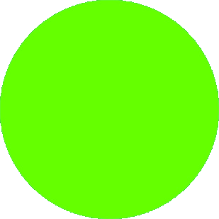

Retos Lingüísticos
Cada uno de los siguientes links te llevará a un reto distinto. Estos problemas fueron creados por el Departamento de Lingüística de la universidad de Oregon, y fueron copiados y traducidos al español para transmitirlos a más personas.
Los retos estás agrupados por nivel de dificultad. La categoría del círculo verde son para todos, los problemas con un cuadrado azul son un poco más retadores. El diamante negro es para los problemas difíciles, y los retos con doble diamante negro son casi imposibles. Estos se los recomendamos solo a las personas experimentadas.
Los problemas en este sitio están en español, y si hablas alguno de los idiomas que aparecen en los retos quizá no te parezcan interesantes. Puedes encontrar otros problemas de lingüística en la página de la Olimpiada Internacional de Lingüística.
Ningún tipo de recurso adicional (diccionarios, etc) es necesario para resolver los problemas. Algunos, particularmente los
de "diamante negro", son muy retadores, pero cada uno de ellos
se puede resolver sin ningún conocimiento especial o referencias externas. A veces es útil usar muchos borradores y hacer diagramas.
Cada lenguaje es único, y cada reto en esta selección de problemas es único. Por eso, no existe una única manera de atacar todos los problemas.
Solo usa tu sentido común, lógica y paciencia, mucha paciencia. En ocasiones, te darás cuenta que cierta hipótesis o idea no funciona.
En esos casos, intenta de nuevo considerando otra posibilidad. Puede ser que algunos lenguajes se escriban de derecha a izquierda, o que el verbo
aparezca al inicio, o quizás al final de la oración. No hay nada más diverso como la creatividad humana al expresarse, siempre mantén la mente abierta a nuevas posibilidades.
Son estos descubrimientos los que hacen que intentar estos problemas sea una aventura excepcional.
 |
Green Circle Puzzles |
Agta, a seriously endangered minority language of the Northern Philippines.
Chickasaw, an American Indian language of the Southeastern United States.
Kurmanji Kurdish, a major language of Iran, Iraq and Turkey.
Classical Nahuatl, the language of the Aztec Empire, 1325-1522.
Swahili of Eastern Congo, a major trade language of the Democratic Republic of Congo (DRC)
Tajik, The national language of Tajikistan.
Turkish, the national language of Modern Turkey.
Yaqui, a Uto-Aztecan language of Arizona and Northern Mexico.
Blue Square Puzzles |
Archi, an endangered minority language of Daghestan, Russia.
Czech. Czech the time in the language of the Czech Republic.
Endo, a Nilo-Saharan language of Kenya.
French. Even your French teacher will find this puzzle challenging!
Hausa, a major trade language of West Africa.
Hawaiian, the Polynesian language spoken by native Hawaiians.
Indonesian. Learn how to do math problems in the major language of the country of Indonesia.
Luvian, an ancient language of the Middle East written in a hieroglyphic script.
Maasai, a Nilo-Saharan language of Kenya and Tanzania.
Quechua, the language of the ancient Inca Empire, and one of the national languages of Modern Peru.
Sanskrit, an ancient language of Northern India and the sacred language of the Hindu Vedas.
Shugnan, an Indo-Iranian language of Tajikistan and Afghanistan.
Swahili. A problem involving dates in the major trade language of East Africa.
Black Diamond Puzzles |
Babylonian. Decipher an educational document in the cuneiform writing system.
Georgian, a modern language that uses an ancient script.
Orkhono-Yeniseyan, an ancient language of Western Asia.
Samoan, the Polynesian language spoken in Western Samoa and American Samoa.
Double Black Diamond Puzzles |
Amharic, the national language of Ethiopia.
Ancient Inscriptions. Unlock the secrets of mysterious inscriptions on five Bronze-age gravestones.
Thai, the major language of modern Thailand.
Tocharian, an ancient language of China.